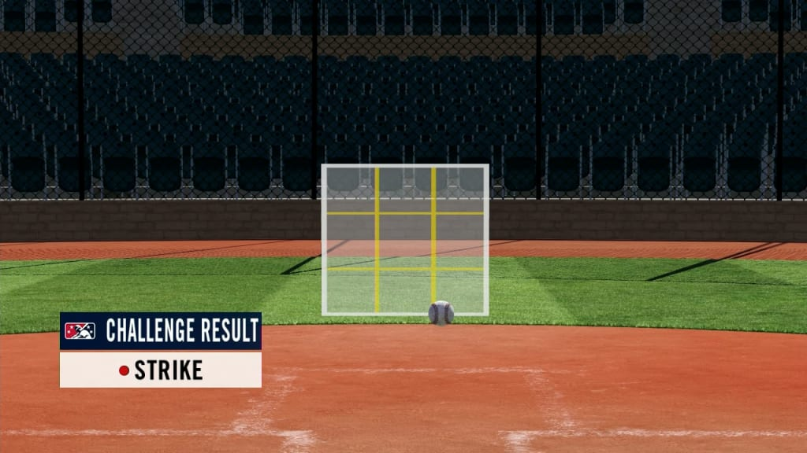

Con tu buen ojo de bateador, observas que el lanzamiento del pithcer seguramente sera malo, por lo que decides no batear y esperar la decision del umpire.
El umpire levanta su brazo y grita "bola", lo que significa que el lanzamiento fue malo y no cuenta como strike. Con este lanzamiento, tienes un conteo de 3 bolas y 2 strike, lo que te deja con cuenta llena para el siguiente tiro.
El pitcher vuelve a a cargar y te da el siguiente lanzamiento.
